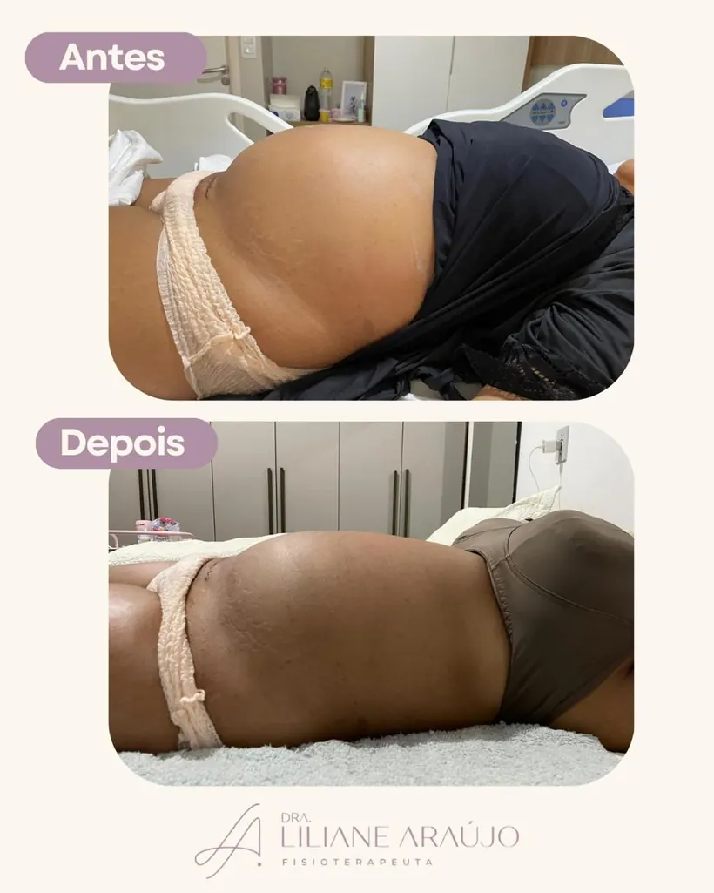
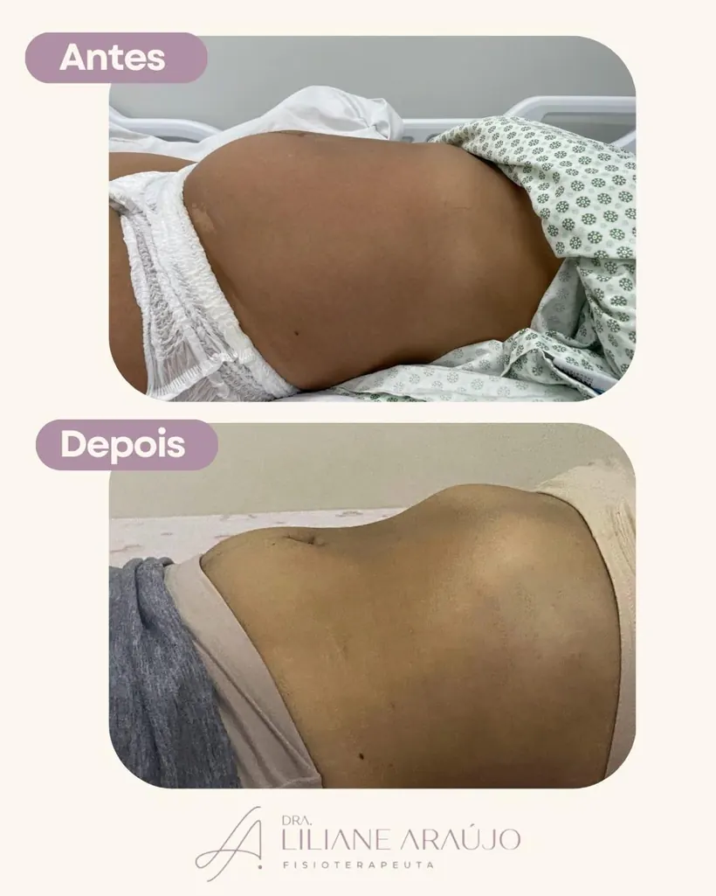
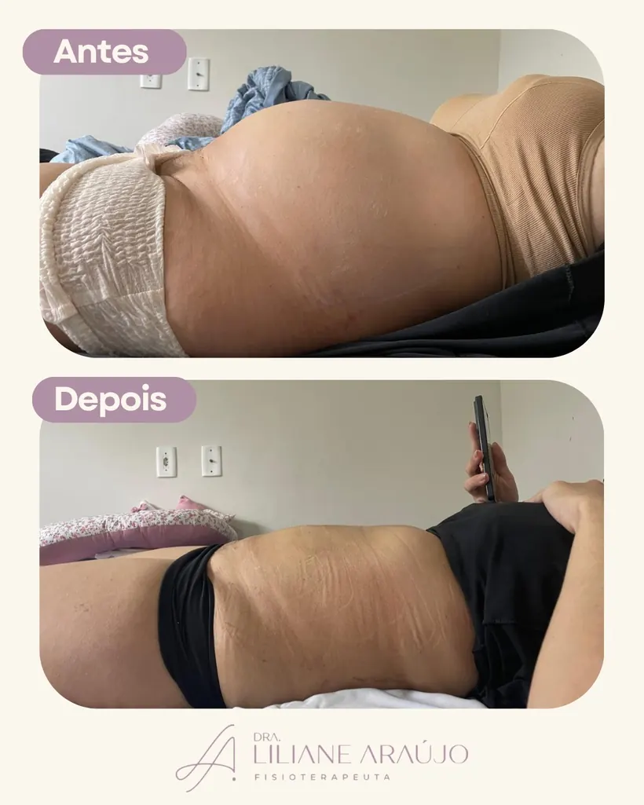
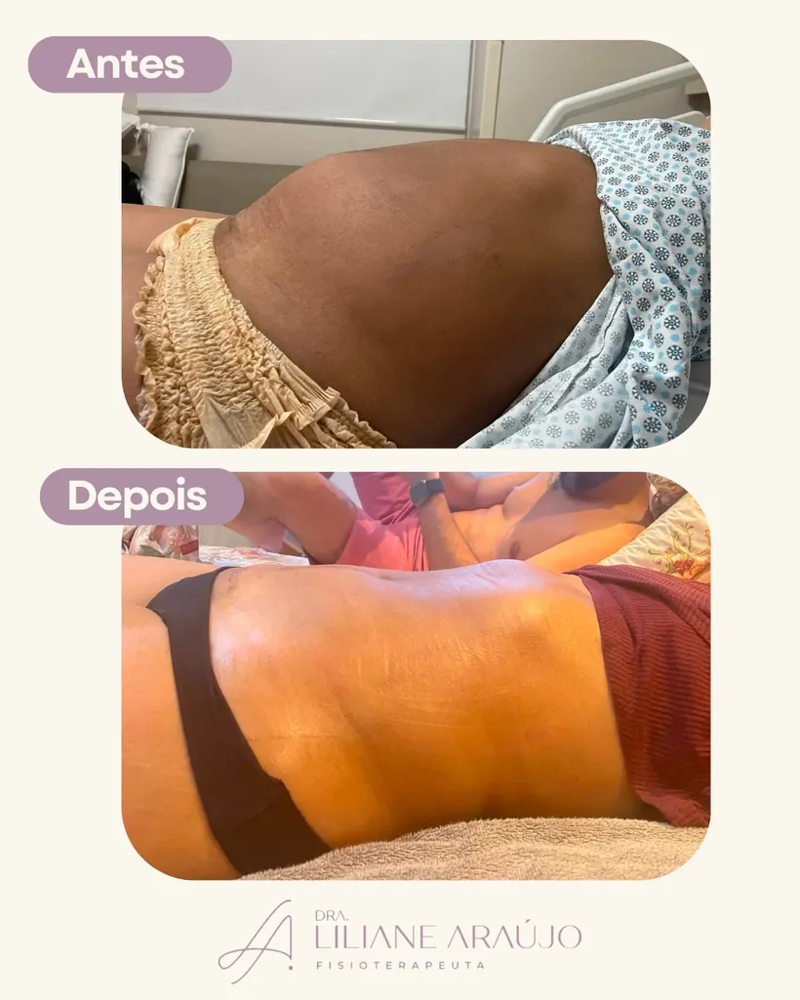
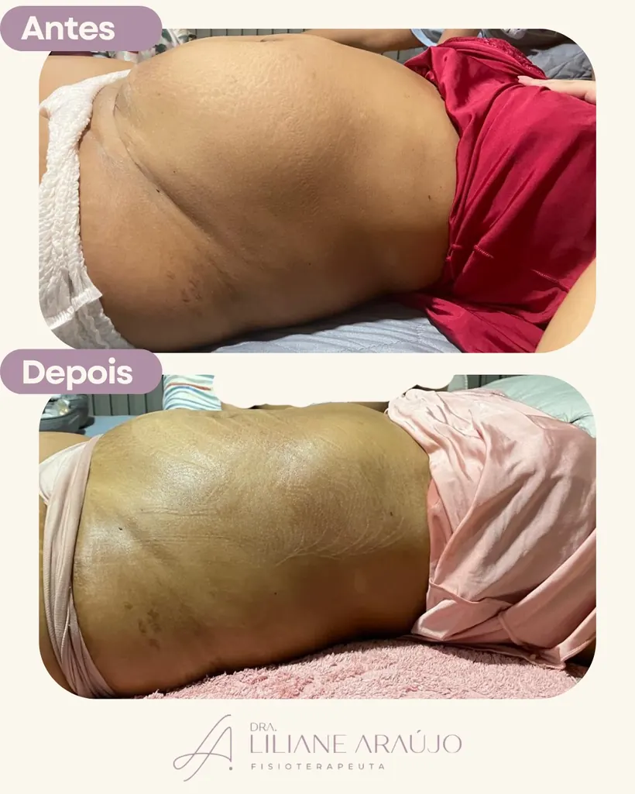
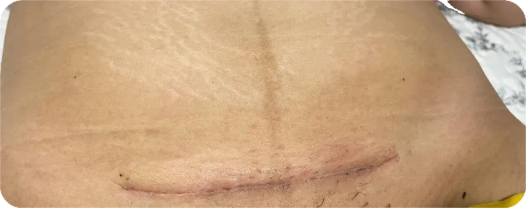
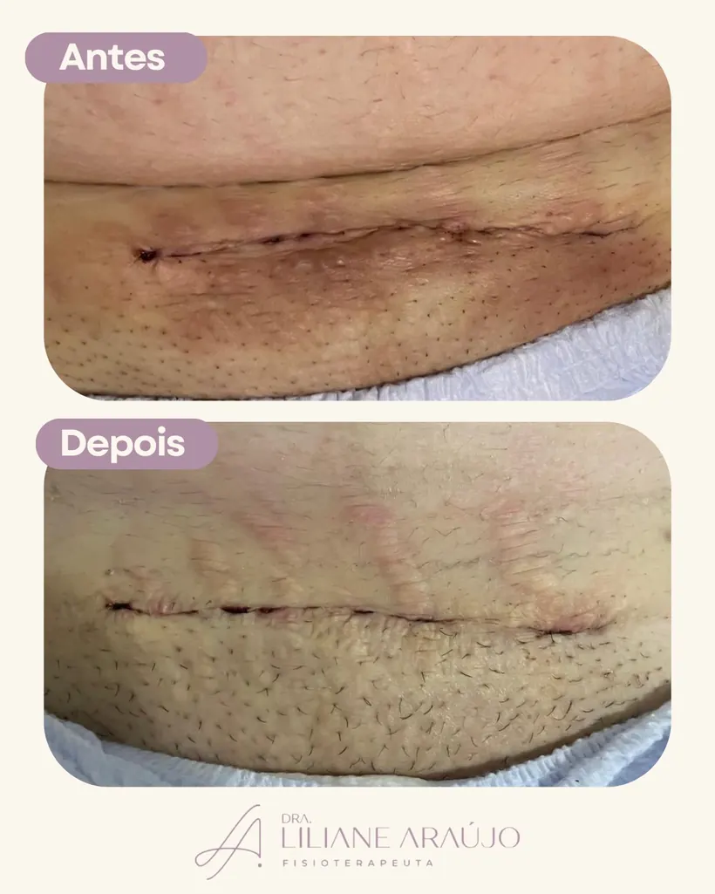
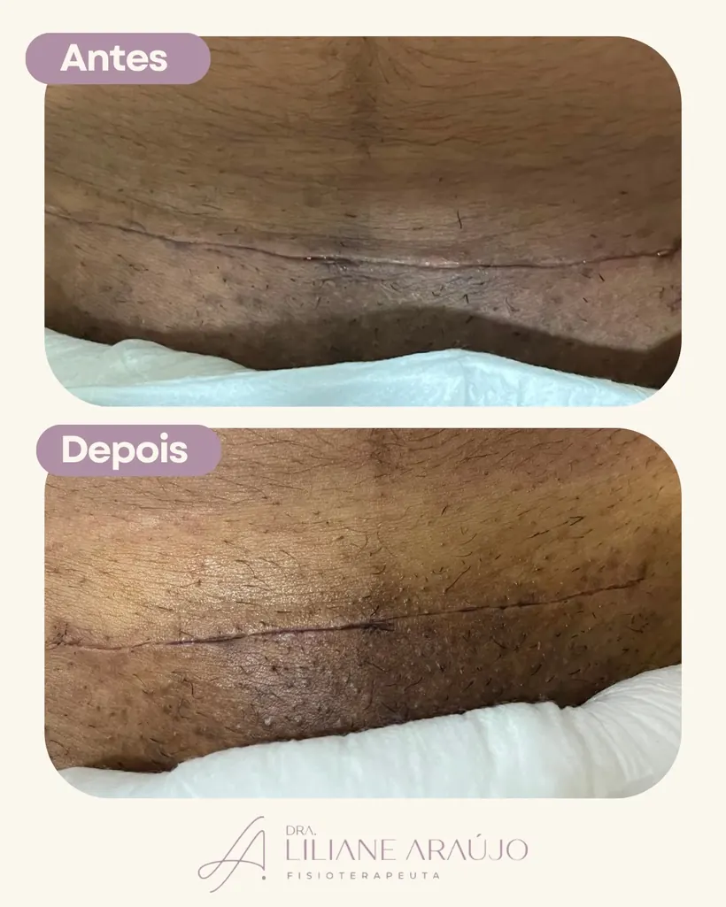
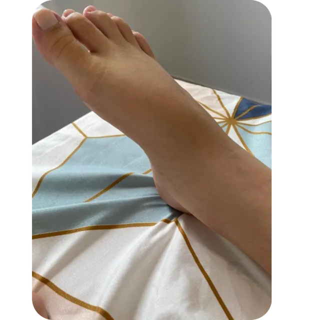
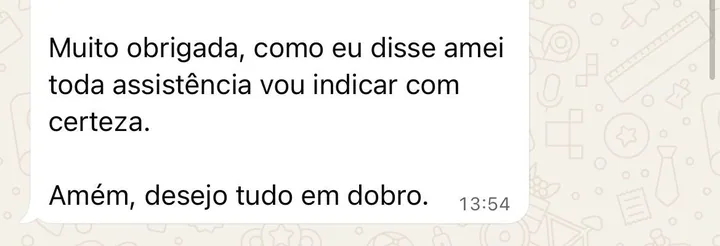

Avaliação clínica individualizada
Uma fisioterapeuta lê o seu corpo antes de tocar nele. Identifica o que está acontecendo, adapta a conduta ao seu caso e assume responsabilidade clínica por cada decisão.

Fisioterapeuta
Gestação e pós-parto em João Pessoa
Sei que você está grávida, que o parto se aproxima
e que talvez você ainda não saiba o que esperar do seu corpo depois.
Eu vim aqui pra te ajudar com isso.
Sou fisioterapeuta formada pela Universidade Federal da Paraíba, com pós-graduação em Fisioterapia Dermatofuncional e Obstétrica — e escolhi dedicar minha carreira ao cuidado de gestantes e puérperas porque acredito que essas fases merecem atenção especializada, acolhimento e muita dedicação.
Uno os conhecimentos da dermato ao cuidado obstétrico para oferecer não só a técnica certa, mas o olhar atento que cada mulher precisa nesse momento tão intenso da vida.
Cuidar bem de você é o que me move. E nesse portfólio vou te mostrar exatamente como faço isso.
Eu sei que existe muitos profissionais oferecendo "pós-parto" por aí. E entendo que às vezes fica difícil entender a diferença. Mas deixa eu te explicar o que só uma fisioterapeuta pode fazer por você:
Uma fisioterapeuta lê o seu corpo antes de tocar nele. Identifica o que está acontecendo, adapta a conduta ao seu caso e assume responsabilidade clínica por cada decisão.
Exercícios certos, no momento certo, na progressão certa, prescritos especialmente para o seu processo de reabilitação com segurança e respaldo científico.
Um olhar profissional percebe sinais antes que eles evoluam — diástase, alterações na cicatriz, compensações posturais — permitindo uma intervenção precoce e uma recuperação mais segura e eficiente.
O cuidado se estende para além das sessões, envolvendo:
Favorecendo uma recuperação mais confortável e segura, com suporte via WhatsApp.
Sua recuperação acontece uma vez só por bebê. Eu quero estar ao seu lado nesse momento — com o preparo técnico e o cuidado que você merece.
Antes de qualquer técnica, eu avalio. O que eu aplico em você é escolhido para o seu corpo, para o seu parto, para o seu momento. Deixa eu te mostrar o que tenho disponível para a sua recuperação:
Seu corpo passou por 9 meses de adaptações e por um evento físico intenso. Ele precisa de um olhar clínico para conduzir o processo de reabilitação.
"A primeira vez que você se levantar após o parto não precisa ser assustadora."
Reduz o inchaço (edema), promove estabilidade abdominal, diminui as tensões sobre a cicatriz da cesárea, consequentemente ajuda no processo de cicatrização, proporciona mais conforto e segurança na hora de sentar para amamentar, levantar, caminhar, segurar o seu bebê e realizar os seus cuidados pessoais. O uso de cinta não é recomendado no pós-parto. O taping contensivo é a alternativa clínica mais adequada — e os resultados são visíveis em dias.








"Sua cicatriz merece cuidado para evoluir com qualidade."
O laser de baixa potência controla a fase inflamatória, ajuda no processo de cicatrização e tem ação analgésica. Atua na condução da ferida operatória da cesárea, lesões perineais, além das fissuras mamilares, facilitando o processo de amamentação.
 Depois
Depois
 Antes
Antes

Depois Antes
Antes


Reduz o edema, melhora a circulação e alivia a sensação de peso e cansaço nas pernas. Um momento de cuidado exclusivo — necessário e merecido.

Antes Depois
Depois
"Os resultados são visíveis já na primeira sessão.
O inchaço diminui. A dor alivia. Você se sente bem."
A gente se encontra online antes do parto — você de onde estiver. Eu te avalio, te oriento e a gente sai dali com um plano. Você vai saber exatamente o que esperar — e vai se sentir muito mais preparada.
Você sai daqui preparada e informada.
Eu vou até você na maternidade, nas primeiras 24 horas após o parto. Você acabou de passar por um evento físico enorme — e esse é o momento mais importante para começar bem a recuperação. Te avalio e realizo as condutas voltadas para o que você precisa.
Eu vou até a sua casa. Você não precisa se preocupar em sair com um recém-nascido — eu chego até você. Reavaliação, troca do taping, laser, progressão dos exercícios. Sua recuperação é acompanhada do início ao fim.
Você me chama no WhatsApp quando tiver dúvida — e eu respondo. Mando exercícios em PDF, orientações para o dia a dia, dicas sobre a recuperação. Você nunca vai ficar sozinha nessa fase.
Mulheres reais. Resultados reais. Aqui em João Pessoa.

Depoimento via WhatsApp

Depoimento via WhatsApp
Depoimento via WhatsApp
Depoimento via WhatsApp

Depoimento via WhatsApp


Depoimentos via WhatsApp
Depoimentos via WhatsApp

Depoimentos via WhatsApp
Depoimento via WhatsApp

Depoimentos via WhatsApp
Avaliação no Google

Avaliação no Google

Avaliação no Google
Eu sei que tem quem cobre menos por aí. E você tem todo o direito de comparar. Mas quero te dizer uma coisa com sinceridade: a sua recuperação pós-parto acontece uma única vez por bebê. O que você decide nesse período impacta seu corpo nos próximos meses — às vezes anos. Não é sobre preço. É sobre não deixar passar o melhor cuidado no momento que mais importa.
"Você não está comprando um procedimento — está investindo em si mesma e na recuperação que você merece."
O que os resultados mostram com clareza: quanto mais contínuo o acompanhamento, mais rápida e completa é a recuperação. Cada retorno que faço traz reavaliação, progressão dos exercícios e ajuste fino na conduta — pensado para o seu momento, não para um padrão.
Clique no plano que te interessa e fale direto com a Dra. Liliane no WhatsApp.
Reserva sem pagamento prévio — o pagamento é feito apenas no dia do atendimento. À vista ou em até 3× sem juros no cartão.
Pós-Parto Essencials
A base completa desde o primeiro dia
ou Cartão: 3× de R$ 150,00 sem juros
O que está incluso
Para quem quer começar a recuperação com o melhor cuidado desde o primeiro dia.
Quero este planoPós-Parto Advanced
Acompanhamento contínuo nos primeiros 7 dias
ou Cartão: 3× de R$ 216,67 sem juros
O que está incluso
Para quem quer manter a evolução da recuperação com acompanhamento profissional por mais uma semana de pós-parto.
Quero este planoPós-Parto Exclusive
O cuidado mais completo para a sua recuperação
ou Cartão: 3× de R$ 283,33 sem juros
O que está incluso
O acompanhamento mais completo nos 21 dias mais importantes do pós-parto — para uma recuperação segura, progressiva e bem acompanhada.
Quero este planoBem Gestar
Sessão de relaxamento e alívio do inchaço
à vista · sessão avulsa
O que está incluso
Bem Gestar Premium
Pacote com 4 sessões de drenagem linfática
à vista · 1 sessão por semana · pacote renovável
O que está incluso
O pacote corresponde a 1 sessão por semana e pode ser renovado. 4 sessões que custariam R$ 600 saem por R$ 500.
Quero este planoGestar em Movimento
Acompanhamento fisioterapêutico para uma gestação mais leve e ativa
8 sessões no mês · R$ 150,00 por sessão
O que está incluso
Será um prazer te atender nesse momento tão especial da sua vida. Meu objetivo é fazer desse momento o mais confortável possível, para que você guarde boas lembranças dessa fase.
Me chama no WhatsApp — vamos conversar sobre qual plano faz mais sentido para você e garantir o seu acompanhamento.
Entre em contato comigo para agendarmos seu acompanhamento.
Falar com a Dra. Liliane